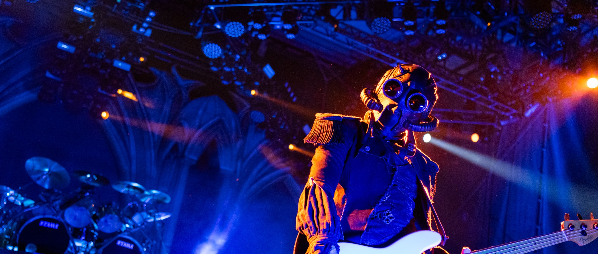
A COMPREHENSIVE GUIDE
(FOR BEGINNERS)
WHAT IS GHOST?
Ghost is a Swedish rock/metal band known for their subversive nature and theatrical performances. They were formed in 2006, by a man named Tobias Forge and his former band mate, Gustaf Lindström.
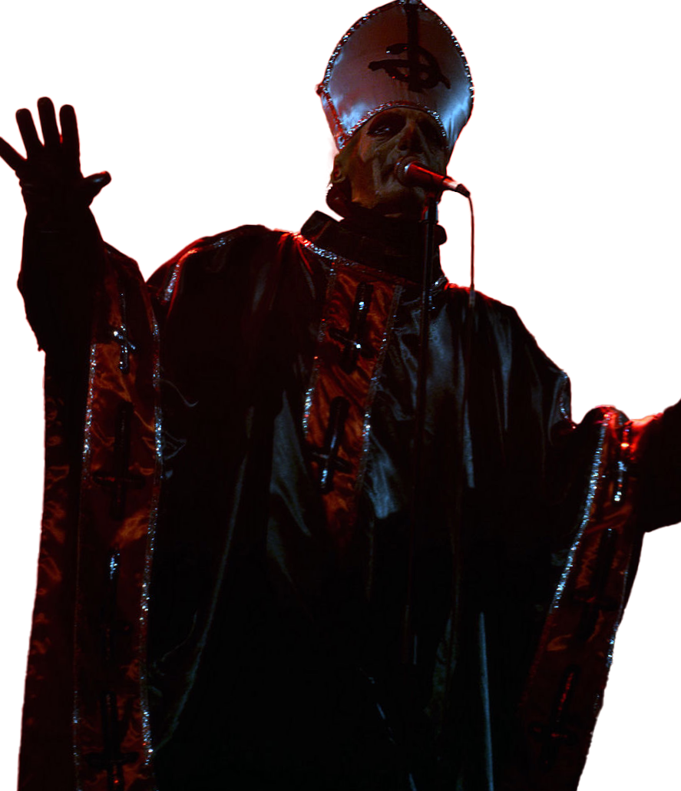
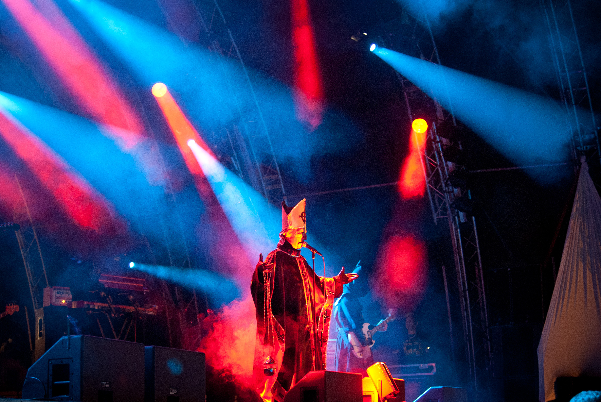
The bands striking imagery stemmed from a love of horror movies and a desire to reference the origins of Scandinavian metal. They’re often recognized by their popularized song, ‘Mary On a Cross’.
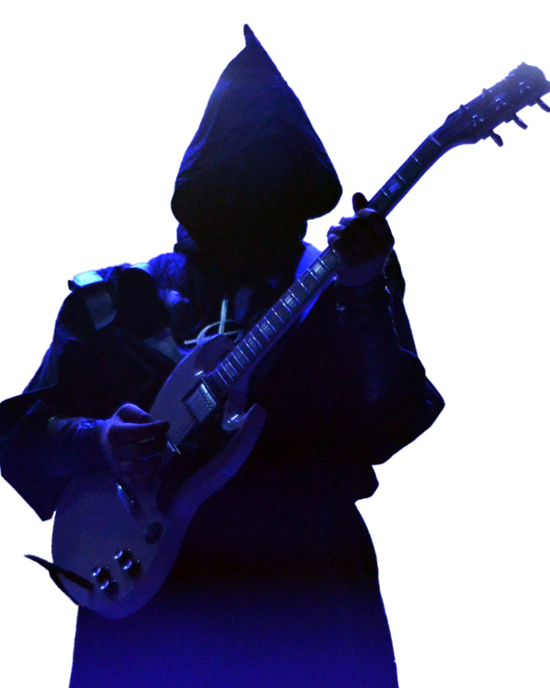
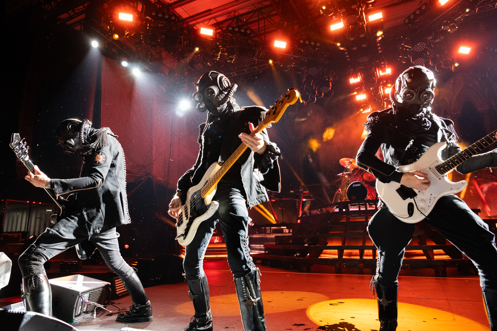
TIMELINE
2006
GHOST IS BORN
Tobias Forge had the thought when listening to his first song that he did not look like the kind of person who should be singing it. Instead, he and his former band mate considered an anonymous band. After several failed attempts at recruiting a lead singer and front man, Tobias had to step up, and chose to do so as Papa Emeritus I.
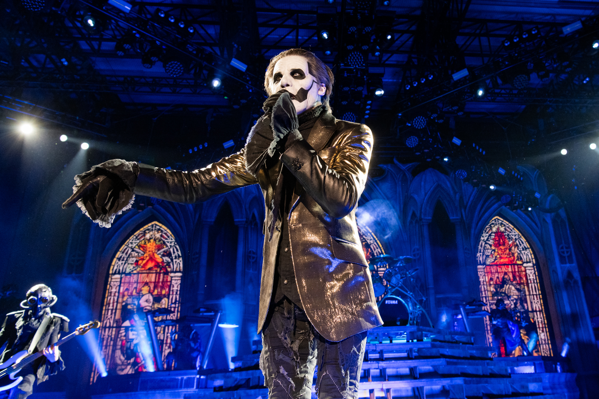
In the years and albums following his choice to pose as a parody of the Pope and clergy, Tobias has evolved through a lineage of 6 different “Papas”, all interconnected through the story line of the band, and all with different personalities and traits.
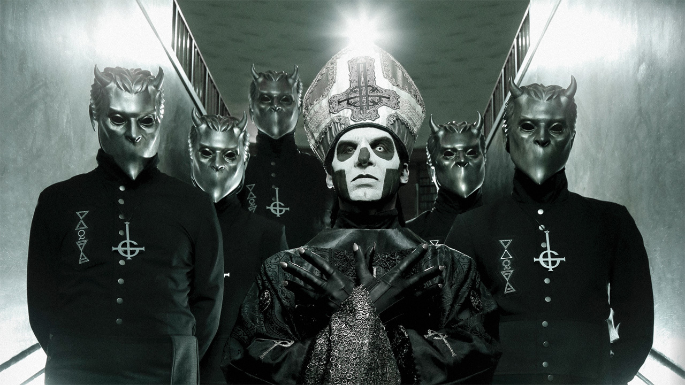
MEET THE PAPAS
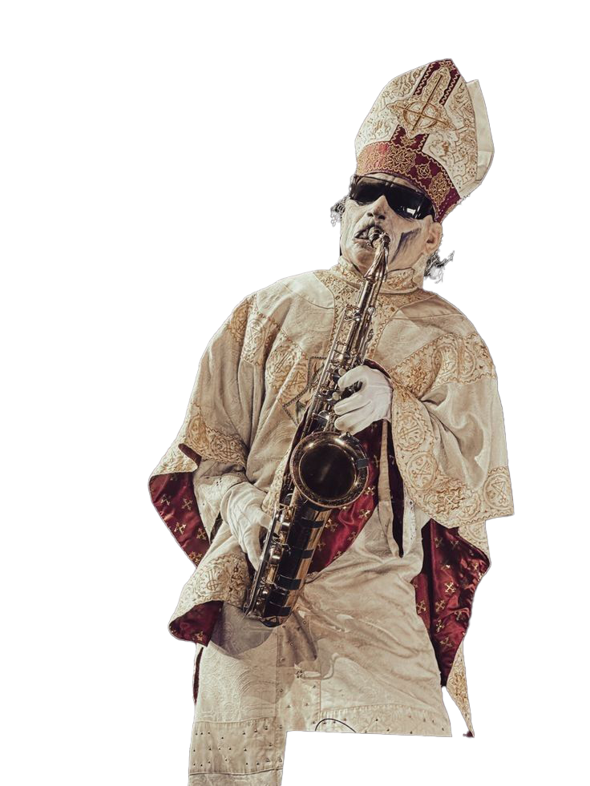
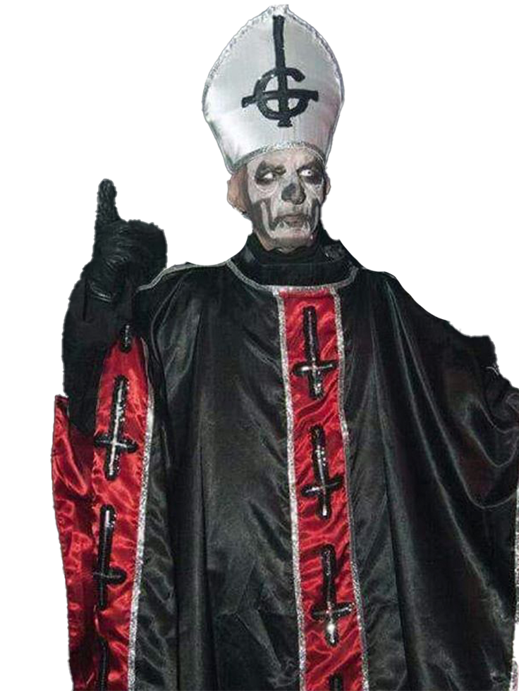
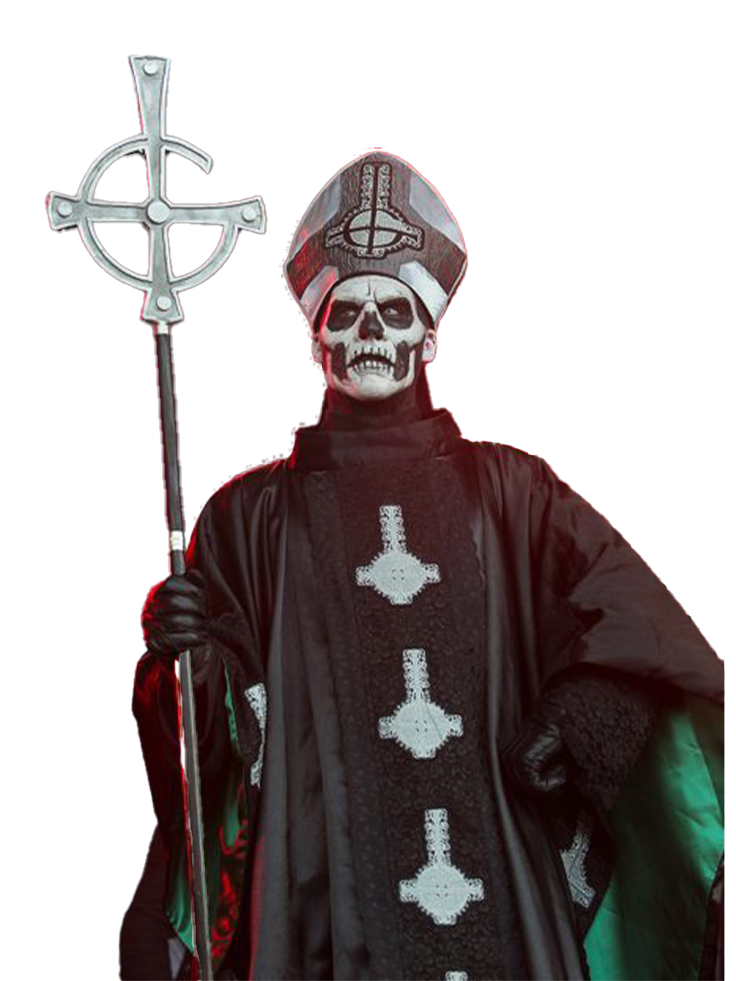
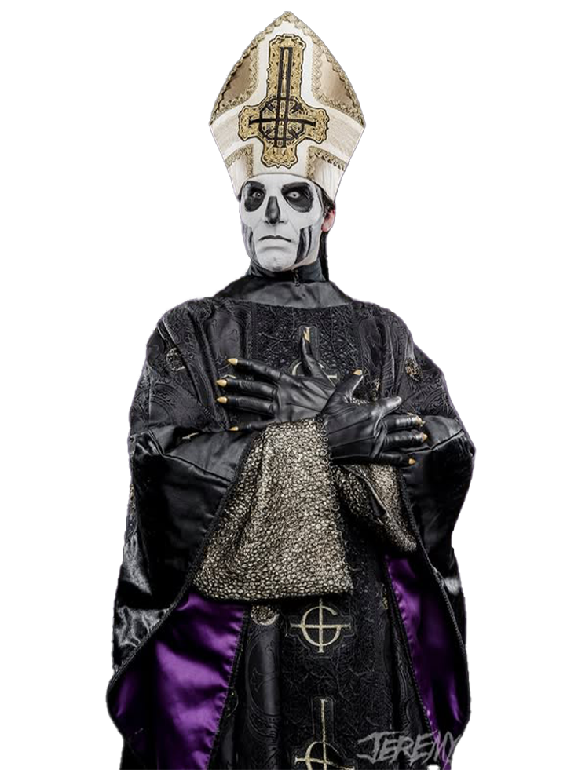
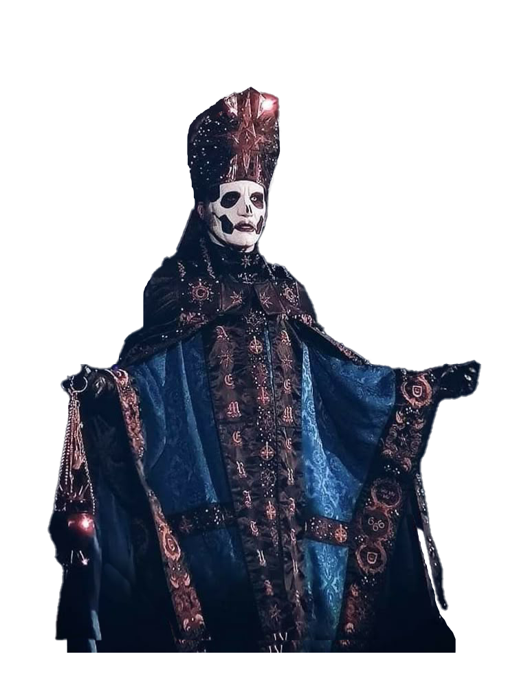
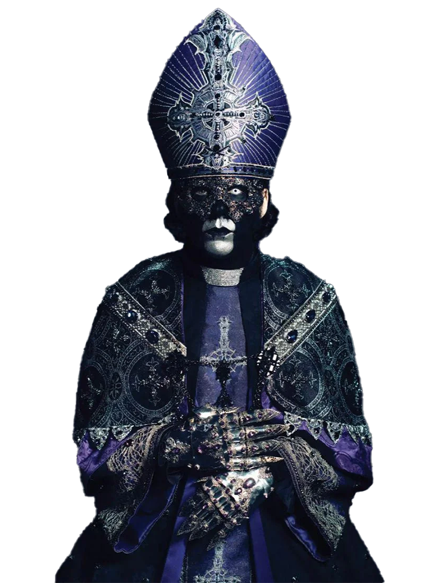
PAPA NIHIL | PAPA EMERITUS I | PAPA EMERITUS II | PAPA EMERITUS III | PAPA EMERITUS IV | PAPA V PERPETUA
2010
OPUS EPONYMUS
“On their debut, Ghost put some hum into heavy metal. Inspired by the genreʼs more melodic sounds from the ʼ70s and ʼ80s, the satanic Swedes build darkly alluring songs from glassy harmonies, headbanger heft, and occult atmospheres. On “Elizabeth,” Beatles-esque hooks and funereal organ coil themselves around doom riffs; equally catchy is “Stand by Him,” an ode to Lucifer laced with tuneful twin leads. The chugging “Con Clavi Con Dio” is way heavier, and the Black Mass-like voices woven throughout make for one potent earworm.”
2013
INFESTISSUMAM
“Frontman Papa Emeritus II dresses like a satanic pope and paints his face to resemble a skull. Backed by a band of cloaked, devil-worshipping monks, Ghost B.C. is an intimidating sight to behold. That is, until the band starts playing music. Like its 2010 debut album, Opus Eponymous, Ghost B.C.ʼs 2013 sophomore full-length is ripe with catchy songs and melodic guitar-pop hooks that have more in common with Blue Öyster Cult than any of those church-burning Norwegian black metal bands.”
2015
MELIORA
“Meliora is a hulking cathedral of sound built from doom metal, ʼ70s rock, and the kind of creepy soundtrack music heard in satanic B movies. On top of that, it agilely balances pop smarts with crunchy power. While “Cirice” weaves hummable harmonies around bedrockrumbling riffs, “From the Pinnace to the Pit” tethers baroque melodicism to viciously stomping beats. The sinister outfit goes for broke on the uplifting ballad “He Is,” which, upon closer inspection, is a devotional to Lucifer himself.”
2018
PREQUELLE
“Set in medieval times, when the bubonic plague spread death across Europe, Ghostʼs fourth album is a sociopolitical allegory for our own time. On soaring, metallic hymns like the Faustian “Rats,” the guitar explosion of “See the Light,” and the sinister, rumbling “Faith,” the theatrical Swedes' new frontman, Cardinal Copia, pulls the curtain back on powerhungry politicians and religious charlatans everywhere. Later, the pulsing discotheque romance of “Dance Macabre” and satanic Queen-esque ballad “Pro Memoria” offer contrasting meditations on love and death.”
2022
IMPERA
“Ghost mastermind Tobias Forge was in a Seattle bookstore in 2014 when he came across what would become the theme for the Swedish occult rockersʼ fifth album, IMPERA. ‘I saw this book called The Rule of Empires,’ he tells Apple Music. ‘Iʼve always been quite interested in history and politics, but you donʼt need to be an expert to know that every empire eventually ends. Right then and there, I knew that at some point I was going to make a record about the rise and
fall of empires.’”
2025
SKELETA
“The angelic choir that opens Skeletá might seem ironic for a band that openly preaches the virtues of Satan, but such is the upside-down church of Ghost. The soaring ‘Peacefield’ kicks off the Swedish bandʼs sixth album before giving way to the deadly ‘Lachryma,’ a tale of crying vampires bolstered by a killer metal riff and ʼ80s synth sounds, as if King Diamond went New Wave 40 years ago. (‘Thatʼs one of my favorite songs ever,’ Forge says.)”
NAMELESS GHOULS
THE CLERGY
The Ghost band isn’t all just Tobias Forge. Along with him as lead singer, there are seven anonymous band members as of 2025. The nameless ghouls play the guitar, bass, keyboard, drums & percussion, as well as backup and choral vocals.
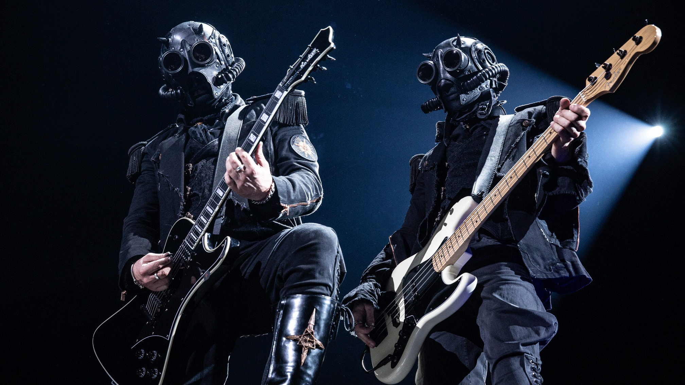
FIN.
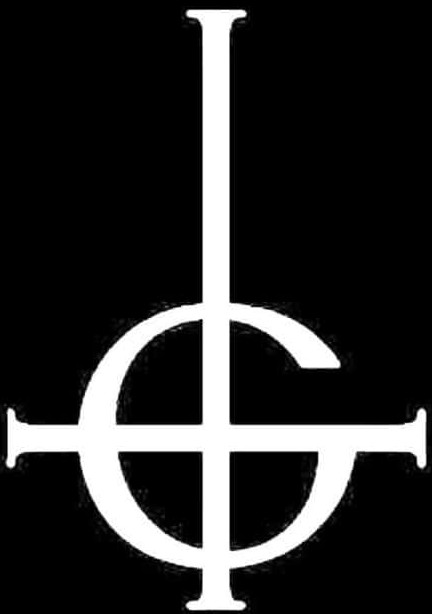